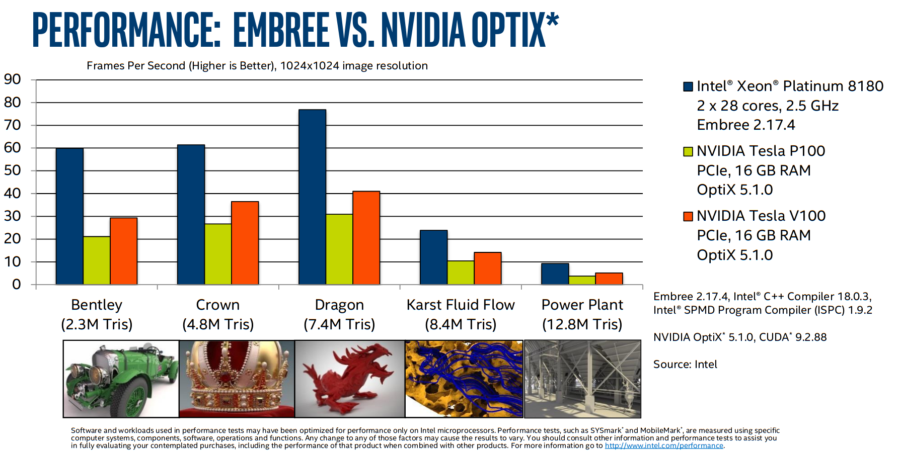

def render_c(filename):
from IPython.display import Markdown
with open(filename) as f:
contents = f.read()
return Markdown("```c\n" + contents + "```\n")
| Architecture | Directives | SIMD | SPMD |
|---|---|---|---|
| Intel AVX+ (SIMD) | #pragma omp simd |
intrinsics | ISPC |
| CUDA (SIMT) | #pragma omp target |
C++ templates and other high-level APIs | CUDA |
ISPC: Intel SPMD Program Compiler
We can program SIMT (e.g., CUDA) devices using directives, but we can also program SIMD (e.g., Intel CPUs) using a SPMD (CUDA-like, acronym comes from “single program” versus “single instruction”) programming model.
render_c('simple-ispc.ispc')
export void simple_ispc(uniform double vin[], uniform double vout[],
uniform int count) {
foreach (index = 0 ... count) {
double v = vin[index];
if (v < 3.)
v = v * v;
else
v = sqrt(v);
vout[index] = v;
}
}
This function is callable from native C code.
render_c('simple.c')
#include <stdio.h>
#include <math.h>
void simple_ispc(double vin[], double vout[], int count);
void simple_c(double vin[], double vout[], int count) {
for (int index=0; index<count; index++) {
double v = vin[index];
if (v < 3.)
v = v * v;
else
v = sqrt(v);
vout[index] = v;
}
}
int main() {
double vin[16], vout[16];
for (int i = 0; i < 16; ++i)
vin[i] = i;
simple_ispc(vin, vout, 16);
for (int i = 0; i < 16; ++i)
printf("%d: simple_ispc(%f) = %f\n", i, vin[i], vout[i]);
simple_c(vin, vout, 16);
for (int i = 0; i < 16; ++i)
printf("%d: simple_c(%f) = %f\n", i, vin[i], vout[i]);
return 0;
}
! make -B simple && ./simple
cc -O3 -march=native -c -o simple.o simple.c
ispc -O3 --target=avx2-i32x8 simple-ispc.ispc -o simple-ispc.o
cc simple.o simple-ispc.o -lm -o simple
0: simple_ispc(0.000000) = 0.000000
1: simple_ispc(1.000000) = 1.000000
2: simple_ispc(2.000000) = 4.000000
3: simple_ispc(3.000000) = 1.732051
4: simple_ispc(4.000000) = 2.000000
5: simple_ispc(5.000000) = 2.236068
6: simple_ispc(6.000000) = 2.449490
7: simple_ispc(7.000000) = 2.645751
8: simple_ispc(8.000000) = 2.828427
9: simple_ispc(9.000000) = 3.000000
10: simple_ispc(10.000000) = 3.162278
11: simple_ispc(11.000000) = 3.316625
12: simple_ispc(12.000000) = 3.464102
13: simple_ispc(13.000000) = 3.605551
14: simple_ispc(14.000000) = 3.741657
15: simple_ispc(15.000000) = 3.872983
0: simple_c(0.000000) = 0.000000
1: simple_c(1.000000) = 1.000000
2: simple_c(2.000000) = 4.000000
3: simple_c(3.000000) = 1.732051
4: simple_c(4.000000) = 2.000000
5: simple_c(5.000000) = 2.236068
6: simple_c(6.000000) = 2.449490
7: simple_c(7.000000) = 2.645751
8: simple_c(8.000000) = 2.828427
9: simple_c(9.000000) = 3.000000
10: simple_c(10.000000) = 3.162278
11: simple_c(11.000000) = 3.316625
12: simple_c(12.000000) = 3.464102
13: simple_c(13.000000) = 3.605551
14: simple_c(14.000000) = 3.741657
15: simple_c(15.000000) = 3.872983
! objdump -d --prefix-addresses -M intel simple | grep sqrt
0000000000001050 <sqrt@plt> jmp QWORD PTR [rip+0x2fd2] # 0000000000004028 <sqrt@GLIBC_2.2.5>
0000000000001056 <sqrt@plt+0x6> push 0x2
000000000000105b <sqrt@plt+0xb> jmp 0000000000001020 <.plt>
00000000000012ec <simple_c+0x4c> vsqrtsd xmm1,xmm0,xmm0
0000000000001302 <simple_c+0x62> call 0000000000001050 <sqrt@plt>
000000000000142d <simple_ispc___un_3C_und_3E_un_3C_und_3E_uni+0xdd> vsqrtpd ymm1,ymm4
0000000000001431 <simple_ispc___un_3C_und_3E_un_3C_und_3E_uni+0xe1> vsqrtpd ymm7,ymm5
000000000000156e <simple_ispc___un_3C_und_3E_un_3C_und_3E_uni+0x21e> vsqrtpd ymm2,ymm6
0000000000001577 <simple_ispc___un_3C_und_3E_un_3C_und_3E_uni+0x227> vsqrtpd ymm3,ymm7
000000000000168d <simple_ispc+0xdd> vsqrtpd ymm1,ymm4
0000000000001691 <simple_ispc+0xe1> vsqrtpd ymm7,ymm5
00000000000017ce <simple_ispc+0x21e> vsqrtpd ymm2,ymm6
00000000000017d7 <simple_ispc+0x227> vsqrtpd ymm3,ymm7
ISPC is a good option for code with cross-lane dependencies or vector lane divergence (branches that affect some lanes differently than others). Writing such code with intrinsics is laborious and compilers often do a poor job of inferring good vectorization strategies (despite #pragma omp simd and the like). An example of successful use of ISPC is Intel’s Embree ray tracing engine.
(As with most vendor-reported performance numbers, we can probably take this with a grain of salt. But it indicates that CPUs remain highly competitive for ray tracing.)

OpenMP target offload and OpenACC
CUDA is relatively hard to maintain and logic/tuning is spread out (between the kernel launch and the device code). OpenMP target offload and OpenACC attempt to provide a more friendly story for maintenance and incremental migration of legacy code.
Terminology
| CUDA Concept | CUDA keyword | OpenACC | OpenMP target |
|---|---|---|---|
| Thread block | blockIdx |
gang |
teams |
| Warp | (implicit) | worker |
thread |
| Thread | threadIdx |
vector |
simd |
Incremental porting with unified memory
Example
OpenACC example from a Lattice-Boltzman miniapp
void LBM::stream(Real* const __restrict a_f,
const Real* const __restrict a_f_post,
const int* a_loStr,
const int* a_hiStr,
const int* a_loAll,
const int* a_hiAll,
const int a_numPts) const
{
const int* const __restrict latI = &m_lattice[0][0];
const int* const __restrict latJ = &m_lattice[1][0];
const int* const __restrict latK = &m_lattice[2][0];
const int
klo = a_loStr[2], khi = a_hiStr[2],
jlo = a_loStr[1], jhi = a_hiStr[1],
ilo = a_loStr[0], ihi = a_hiStr[0];
#pragma acc parallel loop independent collapse(3) \
copyin(a_loAll[SPACEDIM],a_hiAll[SPACEDIM],a_f_post[a_numPts*m_numVels]) \
copyout(a_f[a_numPts*m_numVels]) vector_length(256)
for (int k = klo; k <= khi; ++k) {
for (int j = jlo; j <= jhi; ++j) {
for (int i = ilo; i <= ihi; ++i) {
#pragma acc loop seq independent
for (int m = 0; m < NUMV; ++m) {
const long int offset = m * a_numPts;
const long int index0 = INDEX(i , j, k, a_loAll, a_hiAll);
const long int index2 = INDEX(i - latI[m], j - latJ[m], k - latK[m], a_loAll, a_hiAll);
a_f[index0 + offset] = a_f_post[index2 + offset]; // new f comes from upwind
}
}
}
}
}